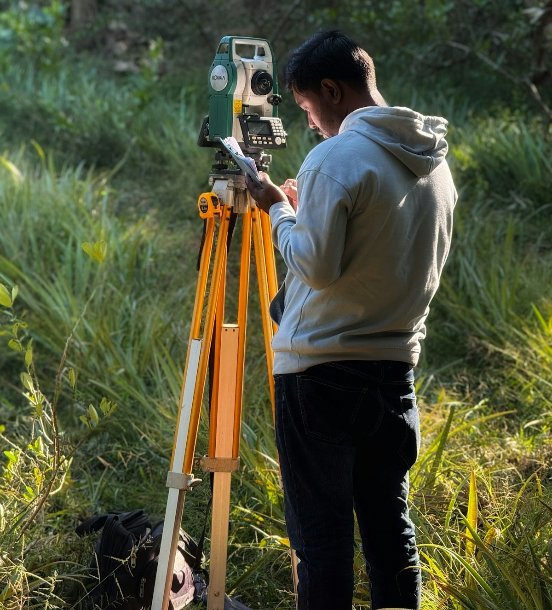

Megbízható földmérési szakértelem
Megbízható földmérési és engedélyügyi szolgáltatásokat nyújtunk, hogy projektje magabiztosan és átláthatóan haladhasson előre.
Amivel foglalkozunk
Átfogó földmérési és engedélyügyi megoldások, az ingatlanához és projektjéhez igazítva.
Pontos mérésekkel egyértelműen meghatározzuk a telekhatárokat és töréspontokat, megelőzve a vitákat és támogatva az adásvételt.
Részletes térképezés a terep szintjeiről, magasságairól és természeti adottságairól a tervezés és fejlesztés támogatására.
Pontos helyszíni kitűzés épületekhez, utakhoz és közművekhez, hogy az építkezés már az elejétől jó irányban haladjon.
Segítség és dokumentációs támogatás az önkormányzati engedélyezési folyamatok gördülékeny intézéséhez.
Átfogó helyszíni adatgyűjtés az építészeti tervezés, a szabályozási megfelelés és a megvalósíthatóság támogatására.
Szakszerű telekalakítási felmérés és dokumentáció a telekosztáshoz, fejlesztéshez és hatósági jóváhagyáshoz.

Rólunk
A Precízió Földmérés professzionális földmérési és engedélyügyi szolgáltatásokat nyújt magánszemélyek, kivitelezők, fejlesztők és ingatlantulajdonosok számára. A szakmai tudást gyakorlatias, ügyfélközpontú hozzáállással ötvözzük, hogy pontos, megbízható eredményeket kapjon.
Legyen szó telekhatár-felmérésről, helyszínrajzi felmérésről, kitűzésről vagy önkormányzati engedélyek intézéséről, célunk, hogy a folyamat átlátható, hatékony és kiszámítható legyen.
Miért minket válasszon
Minden projektben a precizitást, a szakmaiságot és a gyakorlati támogatást helyezzük előtérbe.
Gondos mérések és részletekre figyelő munka minden egyes felmérésnél.
Figyelünk az igényeire, és érthető, egyenes tájékoztatást adunk a folyamat során.
Hatékony munkavégzés, hogy projektje felesleges késedelmek nélkül haladhasson.
Gyakorlati segítség az önkormányzati engedélyekhez és a kapcsolódó dokumentációhoz.
Kapcsolat
Kérdése van, vagy árajánlatot szeretne kérni? Keressen minket az alábbi elérhetőségeken.
+36 30 123 4567
info@preciziofoldmeres.hu
1234 Budapest, Minta utca 10.
1. emelet
Nyitvatartás: Hétfő – Péntek, 8:00 – 17:00